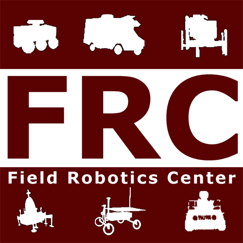
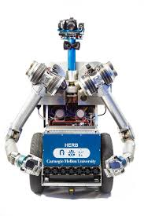
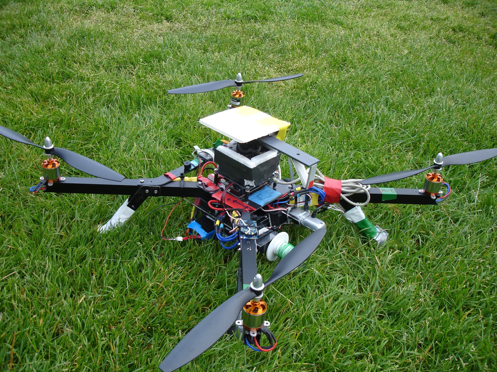
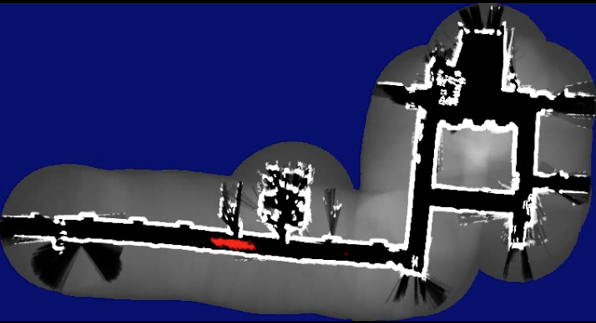

|
|
Welcome! I am a Senior Software Engineer working in the Special Projects Group at Apple. My work here is highly confidential, though broadly involves developing & implementing (C++, Python) high performant algorithms in computational geometry & computer vision for rapid prototyping. |
|
|
From 2013-2015, I worked as a Robotics Engineer for the National Robotics and Engineering Center at CMU. At NREC I worked on several projects related to robotic perception such as terrain classification and mapping. |
|  |
I did a 6 month internship at the Field Robotics Center at Carnegie Mellon working on market based strategies for multirobot collaboration to enable joint exploration. (Paper)(Video) |

|
Recursive Ray Tracer (reflection + refraction) with Blinn-Phong Shading model. (Generated Images) (Code) |
|  |
Programming HERB to play tic-tac-toe. (Video) |
|  |
Autonomous drone flight with a 2D lidar & webcam. (Video) (Website) |
|  |
Localizing a lost robot with particle filtering. (Video) (Code) |